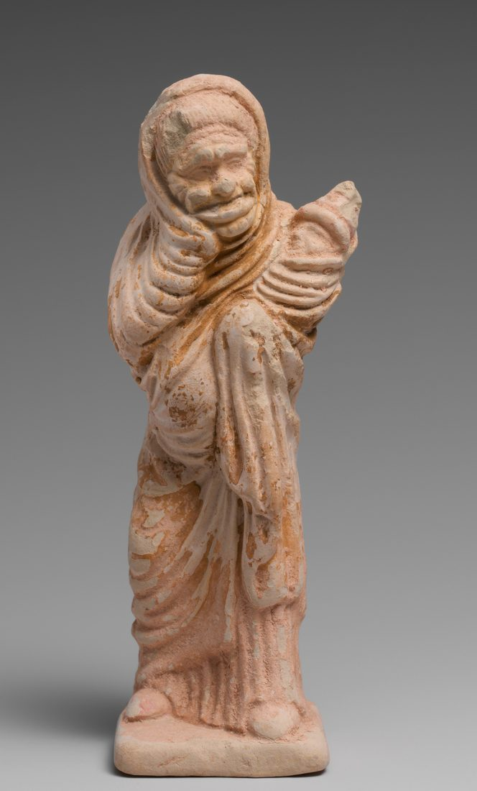
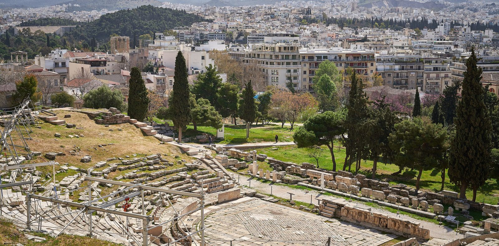

Unit 7 · Women in ancient Greece · Lesson 4
Voices on the stage and in court
Medea, Lysistrata and the wife in Lysias 1: women who speak in sources written by men. Whose voice is it, for whom, and what does it reveal?
Year 11 Ancient History · Present with → or space · Read on a phone with R

Images: The Met (CC0 1.0). Full details on the last slide.
Connect · 3 minutes · books closed · everyone writes one line · press K for the timer
One source, one attitude
Name one source that presents the ideal wife, and its attitude.
Cold call: which source did you choose, and what attitude does it present?
The best widow is the one who is hardly spoken of: “greatest will be hers who is least talked of among the men whether for good or for bad”.
Indoors is the woman’s proper place: “to the woman it is more honourable to stay indoors than to abide in the fields”.
A wife’s job is her household and her children: wives are “to bear us legitimate children and to be faithful guardians of our households”.
Today: women who speak in sources made by men. A tragedy, a comedy and a speech in court: whose voice is it?
Learning intentions and success criteria · 2 minutes
Today’s goals
- analyse how drama and law-court speeches present women
- explain the perspective a source presents, attributing it precisely
- explain what Medea’s speech and Lysistrata reveal about attitudes to women
- explain why a play is evidence of men’s imagination as well as of women’s lives
- answer a perspective question with precise attribution verbs
Syllabus outcomes: AH-11-04 accounts for the different perspectives of individuals and groups in their historical context · AH-11-05 analyses different types of sources for evidence to support a historical account or argument · AH-11-07 communicates historical understanding, applying historical knowledge, terms and concepts. Life Skills: AH-LS-07 identifies different perspectives of the past · AH-LS-11 communicates information about the past using historical terms and concepts.
Note-making · the routine for the whole course
How to structure your notes
questions and key terms, written after
short phrases, arrows (→ leads to), abbreviations (c. = about; BCE = Before the Common Era)
- 1A new page for each lessonA cue column about a quarter of the page wide; title and date at the top; room for a summary at the bottom.
- 2Listen and look, then writeDon’t copy while a slide is being explained. Phrases, not sentences; a source for every claim.
- 3Write your own notes at each ✎ checkpointThen compare with the model notes, one row at a time. Add what you missed in a second colour.
- 4Write the cue questions afterwardsUse exam verbs: identify, describe, explain. To revise, cover your notes and answer the cues.
- 5Finish with a three-sentence summaryTwo checkpoints today: Medea · Lysistrata and the perspective grid.
Key vocabulary · add to the unit word wall
Words for voices on the stage and in court
| Writing terms | Meaning |
|---|---|
| Perspective | The point of view a source presents, shaped by its maker, audience and purpose. |
| Attribution verb | A verb that says how a source presents something: presents… as, portrays, claims, mocks. |
| Added today | Meaning |
| Chorus | In a Greek play, a group that speaks and sings together and comments on the action. In Medea, it is made up of Corinthian women. |
| Comic inversion | A joke that turns the normal order upside down, such as wives telling men how to run a war. |
| Content terms | Meaning |
|---|---|
| Tragedy / comedy | Plays performed at Athenian festivals: serious stories of myth (Medea) / comic fantasies about the present (Lysistrata). |
| Added today | Meaning |
| City Dionysia | A spring festival of the god Dionysus in Athens, where playwrights competed with new plays. |
| Playwright | A person who writes plays. In Athens, the playwrights, and the actors who spoke their lines, were men. |
1 · A tragedy · I do — the play, the speaker and who made it
Medea: a woman’s voice, written by a man

- 1The playA tragedy by Euripides, an Athenian man. It was first performed at the City Dionysia, a festival in Athens, in 431 BCE, and came third of three.
- 2The speakerMedea, a foreign wife in Corinth. Her husband Jason has married the king’s daughter. She speaks to the Chorus, a group of Corinthian women. Later in the play she kills her children to punish him; today’s lines come before that.
- 3The actorsMale actors, in masks, played the women’s parts.
- 4The audienceThe festival audience in Athens. Whether women were among them is debated.
Today’s rule: every voice is written by a man, so none is simply a woman’s own words.
1 · A tragedy · I do — read it aloud, then think aloud: whose voice, for whom, about whom?
Medea speaks to the Corinthian women
Of all things that have life and sense we women are the most hapless creatures; first must we buy a husband at an exorbitant price, and o’er ourselves a tyrant set which is an evil worse than the first; … For divorce is discreditable to women, nor can we disown our lords. … But when a man is vexed with what he finds indoors, he goeth forth and rids his soul of its disgust, betaking him to some friend or comrade of like age; whilst we must needs regard his single self.
And yet they say we live secure at home, while they are at the wars, with their sorry reasoning, for I would gladly take my stand in battle array three times o’er, than once give birth.
Euripides, Medea (431 BCE), a tragedy first performed at the City Dionysia, Athens · trans. E. P. Coleridge (1891; public domain), archive.org
Words: hapless unlucky · exorbitant far too high · tyrant a ruler with total power · discreditable shameful · lords husbands · goeth forth goes out · betaking him taking himself
- 1Who made these words, and who hears them in the play?Euripides, a man, wrote them. In the play, Medea speaks them to the Corinthian women of the Chorus; at the festival, a male actor in a mask spoke them to the audience.
- 2Whose voice do we hear?Medea’s, as a man imagined it. The complaint is put in a woman’s mouth, but the words are Euripides’s choice.
- 3What does it reveal, and about whom?What a male playwright thought a wronged wife might say, and an Athenian audience could hear: marriage as a costly bargain, divorce shameful for a wife, childbirth worse than battle. It is about a foreign wife of myth, so it cannot show what real Athenian wives said.
Notes checkpoint 1 of 2
Medea: whose voice, and what does it reveal?
2 · A comedy · We do — supported reading: read it together, then answer in pairs
Lysistrata: wives who tell the men to stop a war
Often at home on our housekeeping cares,
Often we heard of some foolish proposal you
made for conducting the public affairs. …
Husband, how goes it abroad? we would ask of him;
what have ye done in Assembly to-day? …
Husband says angrily, What’s that to you?
You, hold your tongue! And I held it accordingly. …
Husband, I say, with a tender solicitude,
Why have ye passed such a foolish decree?
Vicious, moodily, glaring askance at me,
Stick to your spinning, my mistress, says he,
Else you will speedily find it the worse for you,
War is the care and the business of men!
Aristophanes, Lysistrata (411 BCE), a comedy · trans. B. B. Rogers (Loeb, 1924; public domain), archive.org · Rogers prints the words spoken at home in italics; the narration is in plain type here
Words: proposal suggestion · the Assembly the meeting of Athenian men that voted on policy · decree an official decision · solicitude concern · askance sideways, with suspicion · spinning making thread from wool, women’s work in the home
- Maker: Aristophanes, an Athenian man, wrote this comedy for performance in Athens in 411 BCE, in the middle of a long war.
- Plot: Lysistrata, an Athenian wife, persuades the women to refuse their husbands until the men make peace. The women also take over the Acropolis, where Athens kept its treasury.
- Speaker: a male actor played Lysistrata. She answers a male official, the Magistrate, who is angry that women meddle in war, and reports what husbands told their wives.
- 1What did the wives ask their husbands at home?What had been decided in the Assembly: “what have ye done in Assembly to-day?”
- 2What did a husband answer about a decree?That the wife should keep to her spinning: “War is the care and the business of men!”
- 3What does Lysistrata do with his words?She repeats them to the Magistrate, to show how husbands shut their wives out of decisions about the war.
2 · A comedy · We do — in pairs, then cold call
Why would an audience in 411 BCE laugh?
Stick to your spinning, my mistress, says he,
Else you will speedily find it the worse for you,
War is the care and the business of men!
trans. B. B. Rogers (Loeb, 1924) · Rogers prints the words spoken at home in italics; the narration is in plain type here
In pairs (1 minute), then cold call: why would an audience in 411 BCE laugh at this?
the normal order: war is men’s business (the husband’s line) · the inversion: a woman, played by a man, lectures a male official · the joke needs the audience to share the normal order · it may also let them laugh at the men’s own decisions in a long war
Comic inversion, not a women’s movement: evidence of what men could imagine, and laugh at, about women.
2 · A comedy · We do — in pairs, complete the grid in your booklet · then compare
Who made each voice, for whom, and what does it show?
| Source | Maker | Audience | Perspective | How we know |
|---|---|---|---|---|
| Lysias 1 (Lesson 2) | Lysias, a speechwriter, for Euphiletus to speak | A court of Athenian men | A husband who says he trusted his wife and for a long time suspected nothing, and who set no trap; she is praised as, in the early days, “the most excellent of wives” | Lysias wrote it for a defendant; the wife’s words, as in 1.12 and 1.14, come to us in her husband’s telling |
| Medea 230–251 | Euripides, an Athenian man; male actors | The festival audience in Athens, 431 BCE; in the play, the Corinthian Chorus | Marriage as a costly, unequal bargain for women: a husband bought at “an exorbitant price”, a “tyrant”, childbirth worse than battle | A tragedy by a man; the speaker is a foreign wife of myth, and the Hypothesis dates its performance at the festival |
| Lysistrata 507–520 | Aristophanes, an Athenian man; male actors | The audience in Athens, 411 BCE | Wives who were shut out of decisions and who take charge: a comic fantasy that turns the normal order upside down | A comedy whose plot is a fantasy; the husband’s retort shows the normal order that the joke upends |
Notes checkpoint 2 of 2
Lysistrata and the three voices
3 · You do · Writing focus · 7 minutes · I do → We do → apply
Writing focus: the perspective question
Name the maker and whose voice it is, then use a precise verb: presents … as, portrays, claims, mocks. Use the present tense for what a source does. Frame: “[Writer] presents … as …; this reveals … rather than …”
What perspective does Lysias 1 present on the wife of Euphiletus? Worked example · written for this lesson
Lysias presents Euphiletus’s wife, through her husband’s defence, as at first “the most excellent of wives”, a portrait shaped for a jury of men; it reveals what a husband needed jurors to believe rather than what his wife thought.
Maker and voice: who made it, whose words
Verb + perspective: presents … as, with brief evidence
Audience: for whom it was shaped
What it reveals: … rather than …
Open Question 1 with the maker and a precise verb: “[Writer] presents … as …” End with “this reveals … rather than …” Your Writing toolkit (booklet pages 3–4): attribution verbs.
Replace says with the most precise verb. Vote with your A, B, C or D card on “3, 2, 1, show”.
1 · “Thucydides says that Pericles told the widows to be least talked of among men.”
- Aproves
- Breports
- Cmocks
- Dshows
Thucydides reports a speech. A overclaims: one report proves nothing about every widow. C gives the writer a tone the lines don’t show. D treats a speech as a fact.
2 · “Apollodorus says that wives exist to bear legitimate children.”
- Areports
- Bproves
- Cshows
- Dclaims
A prosecutor puts forward a view for a jury to accept (argues also works). A treats him as a neutral reporter. B overclaims. C treats his view as a fact.
3 · You do · 22 minutes in all · deconstruct both questions first (2 minutes) · press K for the 20-minute timer
Two timed answers: deconstruct them first
1 · What perspective on marriage does Euripides’s Medea present? 4 marks
2 · How does Aristophanes’s Lysistrata depict women? 5 marks
Deconstruct them: what does each question ask you to do?
| Step | Question 1 | Question 2 |
|---|---|---|
| Verb | What perspective … present: not a word in NESA’s glossary, but a self-explanatory question. It asks whose view this is, shaped by its maker and audience (department advice) | How … depict: also self-explanatory. It asks what picture of women the play draws, and how it draws it |
| Topic | the view of marriage in Medea’s speech | women in Lysistrata |
| Limits | Euripides’s Medea only (today’s extract); a view, not a fact about real wives | Aristophanes’s Lysistrata only (today’s extract and plot); a comedy written for an audience in 411 BCE |
| Do | 4 marks: three to five sentences (department advice). Name the maker and voice; a precise verb (presents … as); brief evidence; this reveals … rather than … | 5 marks: a developed paragraph with a judgement (department advice). The picture, with evidence; how comedy shapes it; end with what it reveals, rather than what women wanted |
3 · You do · timer running · Question 1 about 7 minutes · Question 2 about 11 minutes · then 2 minutes to check
Write your two answers
Question 1 · 4 marks · What perspective on marriage does Euripides’s Medea present?
Question 2 · 5 marks · How does Aristophanes’s Lysistrata depict women?
- Name the maker and say whose voice it is.
- Use a precise verb: presents … as, portrays, claims, mocks.
- Give brief evidence from the extract, in the present tense.
- End with what it reveals, rather than what women thought or wanted.
Euripides gives Medea a powerful complaint, yet she goes on to kill her children: evaluate whether the play sympathises with women or warns against them.
Use your grid and Notes 1 and 2. Word bank:
Frames: “[Writer]’s [play] presents … as …, because …” · “this reveals … rather than …”
3 · You do · after you write · compare yours with a model
Model answers: whose voice, which verb, what it reveals
Euripides, an Athenian playwright writing for the festival audience of 431 BCE, presents marriage through Medea as an unequal bargain for women. A wife must “buy a husband at an exorbitant price” and then accept a tyrant over herself, and divorce is shameful for her. Medea even declares, “I would gladly take my stand in battle array three times o’er, than once give birth”. It is a woman’s complaint, but a man wrote it and a male actor spoke it, so it reveals what an Athenian dramatist could imagine a wronged wife saying rather than what real wives thought.
Aristophanes, an Athenian playwright writing for an audience in 411 BCE, depicts women in Lysistrata as able to end a war that the men have failed to end, but only through comic inversion. Lysistrata, played by a male actor, tells a male Magistrate what husbands once told their wives: “War is the care and the business of men!” From the start of the play, the wives’ plan is to refuse their husbands until the men make peace. The joke depends on the audience holding that normal order in mind, so the wives’ success is a fantasy that turns it upside down. The play therefore reveals what a male playwright could imagine, and an audience laugh at, rather than a women’s movement or what Athenian women wanted.
Finish your notes If time · or at home
Summary: three sentences
- Who made Medea’s speech, and what does it reveal?
- How does Lysistrata depict women, and why is that comic inversion?
- Why is the wife in Lysias 1 not speaking in her own voice?
Euripides, a man, wrote Medea’s complaint about marriage for a festival audience in 431 BCE, so it reveals what a playwright could imagine a wronged wife saying. In Lysistrata, Aristophanes, also a man, depicts wives who end a war and answer the retort “War is the care and the business of men!” in a comedy for 411 BCE, a comic inversion rather than a women’s movement. In Lysias 1, the speechwriter Lysias gives Euphiletus’s wife no voice of her own: her portrait and her words come through her husband’s defence, shaped for a court of men.
Check for understanding · gesture vote · show your thumb on “3, 2, 1, show”
Agree or disagree?
“Lysistrata shows that Athenian women wanted political power.”
Cold call each camp: what is your evidence?
A male playwright wrote Lysistrata’s words for an audience in 411 BCE, and the plot is a comic fantasy: wives who end a war by refusing their husbands. At most, the play shows that an audience could laugh at the idea of wives telling men to stop a war. It cannot show that real women wanted political power: a comic inversion is not a women’s movement.
Exit ticket · 4 minutes · before you leave
One sentence on Lysistrata
Stick to your spinning, my mistress, says he,
Else you will speedily find it the worse for you,
War is the care and the business of men!
Aristophanes, Lysistrata · trans. B. B. Rogers (Loeb, 1924) · Rogers prints the words spoken at home in italics; the narration is in plain type here
Write one sentence on Lysistrata that uses “presents … as …”.
For example: “Aristophanes presents the wives as able to end a war, but only in a comic fantasy for the audience of 411 BCE.” It names Aristophanes, uses presents … as in the present tense, and says what the picture cannot show.
Then check yourself against today’s three “I can” statements. Next lesson: a different kind of evidence: painted vases and grave stelai from Classical Athens.
Practice and review · 1 of 4 · true, false, justify
True or false? Justify your answer
- 1Medea’s speech about marriage was written by a woman. False — Euripides, an Athenian man, wrote it. Medea is a character, and a male actor spoke her lines.
- 2In the play, Medea speaks these lines to the women of Athens. False — she speaks to the Chorus, a group of Corinthian women; the play was first performed for an audience in Athens.
- 3Women played the women’s parts in Athenian tragedy and comedy. False — male actors in masks played them.
- 4Lysistrata records how Athenian women really ended a war. False — it is a comedy by a man: wives who end a war by refusing their husbands are a fantasy, not a record.
- 5Lysistrata reports that husbands told their wives “War is the care and the business of men!” True — she says this to the Magistrate (519–520), and the joke turns the normal order upside down.
- 6In Lysias 1, the wife’s words come to us through her husband’s telling. True — where the speech gives her words, as in 1.12 and 1.14, it is Euphiletus who reports them, in a speech Lysias wrote for him.
Practice and review · 2 of 4 · writing · deconstruct each question first · read the marks
A precise verb, then a short perspective answer
- “Euripides says that Medea would rather fight in battle than give birth.”
- “Aristophanes says that husbands told their wives to stick to their spinning.”
- “Lysias says that the wife told her husband the lamp had gone out.”
1 · Euripides presents Medea as ranking childbirth above battle for danger: “I would gladly take my stand in battle array three times o’er, than once give birth”, she declares. 2 · Aristophanes has Lysistrata report husbands silencing their wives with a line the comedy mocks. 3 · Euphiletus claims, in the speech Lysias wrote for him, that his wife explained the noise at the door by saying the child’s lamp had gone out.
What perspective on Medea’s complaint do the women of the Chorus present?
Cho. This will I do; for thou wilt be taking a just vengeance on thy husband, Medea. That thou shouldst mourn thy lot surprises me not.
trans. E. P. Coleridge (1891)
Euripides presents the Corinthian women of the Chorus as agreeing that Medea’s grievance is just. When she asks for their silence, they promise it and call her planned revenge “a just vengeance on thy husband”. Because a male playwright wrote the Chorus, it reveals how Euripides invited his audience to hear her complaint rather than what real Corinthian women thought.
Practice and review · 3 of 4 · extension · evaluate
Does the play sympathise with women, or warn against them?
Euripides gives Medea a powerful complaint, yet she goes on to kill her children: evaluate whether the play sympathises with women or warns against them.
Shape: Judge → Evidence → Analyse → Evaluate → Resolve, with the same degree in the Judge and the Resolve.
… first must we buy a husband at an exorbitant price, and o’er ourselves a tyrant set … For divorce is discreditable to women, nor can we disown our lords. …
Cho. This will I do; for thou wilt be taking a just vengeance on thy husband, Medea.
trans. E. P. Coleridge (1891)
The play largely sympathises with women’s grievances, although it does not excuse Medea. Euripides gives her a complaint with force: a wife must “buy a husband at an exorbitant price”, and “divorce is discreditable to women”. The Corinthian women of the Chorus accept it, promising silence and calling her planned revenge “a just vengeance on thy husband”. Yet the same Medea goes on to kill her children, so a playwright could also have been showing what a wronged wife’s anger might do, which suits a warning. However, the play begins with her husband’s betrayal, so the audience sees the harm start with a man. On balance, the play largely sympathises with the grievance, though not with the act, and, because a man wrote it for a festival audience, it shows what he could imagine rather than what women asked for.
Practice and review · 4 of 4 · cover your notes and answer from memory
Quick checks
- Who made Medea’s speech, and who spoke it at the festival? Euripides, an Athenian man, wrote it; a male actor in a mask spoke it, at the City Dionysia in Athens, in 431 BCE.
- What complaint about marriage does Medea make? A wife must “buy a husband at an exorbitant price” and then get “a tyrant”; divorce is shameful for women; and she would rather fight three times than give birth once.
- What does Lysistrata reveal, and what can it not show? It reveals what a male playwright could imagine, and an audience of 411 BCE laugh at; it cannot show that real women wanted political power.
- What is comic inversion? A joke that turns the normal order upside down, such as wives telling men how to run a war.
- Why is the wife in Lysias 1 not speaking in her own voice? Lysias wrote the speech for her husband, and any words it gives her come through his telling, shaped for a court of men.
- Which verbs say how a source presents something? Presents … as, portrays, claims, mocks: not “says”. Use the present tense for what a source does.
Sources and credits
Where everything comes from
Euripides, Medea 230–251 and the Chorus’s reply: trans. E. P. Coleridge, The Plays of Euripides, vol. 1 (George Bell and Sons, 1891; public domain), pp. 39–40, the printed text, archive.org. Aristophanes, Lysistrata 507–520 (extracts): trans. B. B. Rogers, Aristophanes, vol. 3 (Loeb Classical Library, 1924; public domain), pp. 51 and 53, archive.org. Lysias 1, On the Murder of Eratosthenes 1.7, 1.12 and 1.14: trans. W. R. M. Lamb (Loeb, 1930), Perseus Digital Library (CC BY-SA 3.0 US); short extracts quoted for study. Connect: Thucydides 2.45.2, trans. R. Crawley (Dent, 1910; public domain), Perseus Digital Library; Xenophon, Oeconomicus 7.30, trans. E. C. Marchant (Loeb, 1923), Perseus Digital Library, with 7.30 from the printed volume (archive.org); [Demosthenes] 59.122, trans. A. T. Murray (Loeb, 1939; public domain), archive.org.
Facts: the ancient Hypothesis to Medea (date and placing), as discussed in W. Allan, Euripides: Medea (2002), pp. 11–12; EBSCO Research Starters, “Theatre in Ancient Greece” (male, masked actors); Wikipedia, “Theatre of Dionysus” (CC BY-SA 4.0); Rogers’s Loeb introduction to Lysistrata (the year of its first performance).
Outcomes and content: NSW Education Standards Authority (NESA), Ancient History 11–12 Syllabus (2024). © NESA. Directive verbs: NESA, Glossary of key words.
- Terracotta statuette of an actor, Greek, late 5th–early 4th century BCE (Metropolitan Museum of Art, 13.225.26) · Photo: The Metropolitan Museum of Art · CC0 1.0 · source
- The Theatre of Dionysus, south slope of the Acropolis, Athens (photograph, 2021) · Photo: George E. Koronaios · CC BY-SA 2.0 · source
_on_March_22,_2021.jpg){kind=link}
All images are public domain or openly licensed, and were resized or cropped for the web. Each is shared under the licence shown.